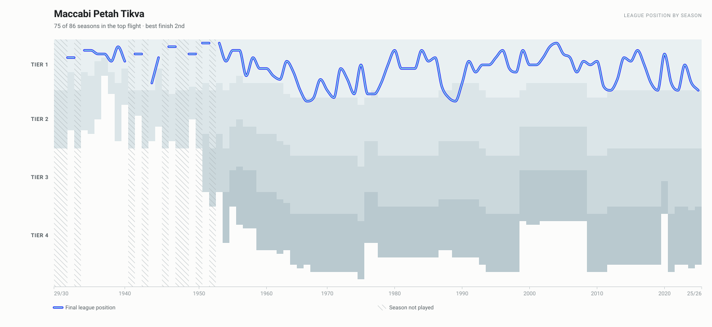
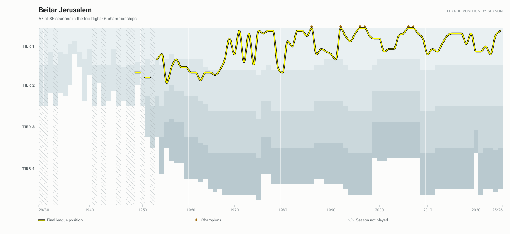
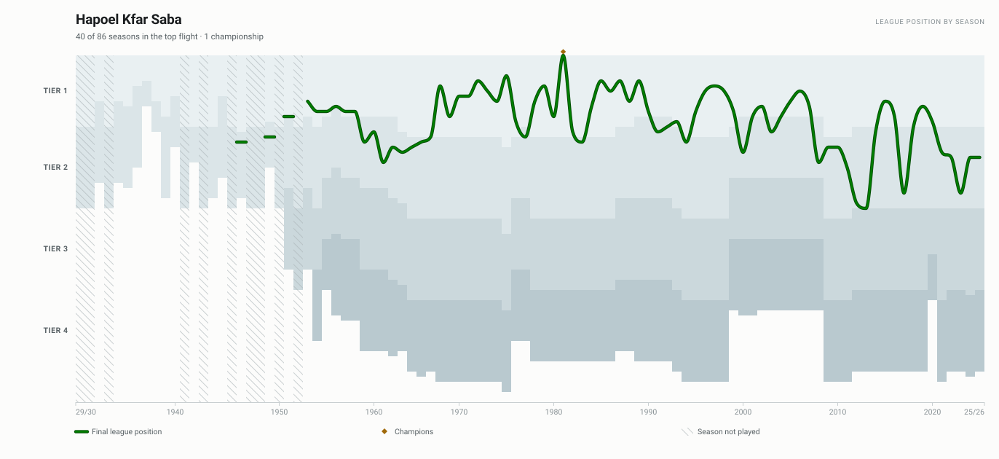
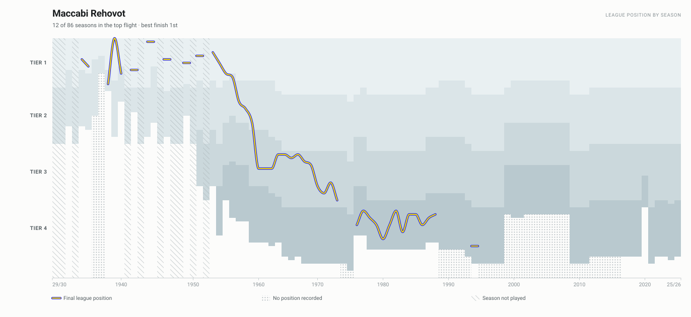
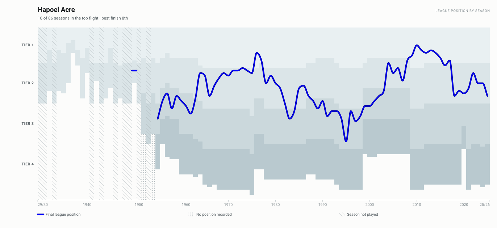

34 clubs across 96 season columns. Position is counted down the whole pyramid, so each tier continues the one above — the band boundaries step because the top flight has held anywhere between 10 and 18 clubs.




